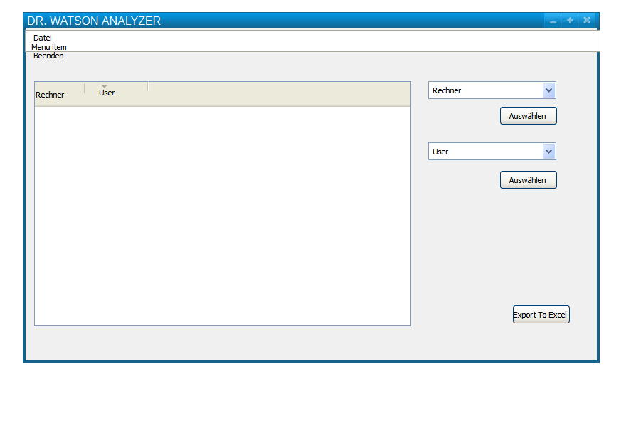

WER darstellen¶
Ausgangssituation¶
In ihrer Firma existieren Skripte, die Windows Error Reports sammeln und in einer MySQL-Datenbank abspeichern. Nachdem mit dem Speichern der Daten der Sammelvorgang abgeschlossen ist, wird nun vom IT-Leiter der Wunsch geäußert, diese Daten in einer einfachen Form abfragen und nach bestimmten Kriterien auswerten zu können. Da dieses Projekt keine hohe Priorität in der Firma hat, können keine Programmierer mit dieser Aufgabe betraut werden.
Sie erhalten deshalb vom IT-Leiter die Aufgabe, für diese Auswertung eine einfache grafische Lösung zu programmieren.
Zur Information erhalten Sie vom IT-Leiter noch das folgende Datenmodell.
{kind=link}
Aufgabe
Überlegen Sie sich mit Hilfe eines Mockups, wie diese “einfache grafische Lösung” aussehen könnte. gehen Sie dabei von folgender Fragestellung aus: Was könnte der IT-Leiter mit dieser Anwendung vorhaben; wie könnte er sie benutzen ?
Grafische Mockups/WireFrames¶
Mit “Mockup” wird die Technik beschrieben, mit einfachen Hilfsmitteln eine Vorstellung von einer GUI-Anwendung zu erhalten. Es können damit Bedienkonzepte dargestellt und diskutiert werden.
Ein bekanntes und für unsere Zwecke ausreichendes Tool ist das Programm PENCIL, welches Sie unter http://pencil.evolus.vn/ downloaden können.
Eine damit erzeugte GUI könnte wie folgt aussehen:
{kind=link}
Umsetzung in PrimalForms¶
PrimalForms Community Edition ist ein Werkzeug, mit dem man grafische Oberflächen (WinForm) für die Powershell zusammenklicken kann. Neben den grafischen Elementen und deren Eigenschaften können auch die auf diese Komponenten wirkenden Ereignisse (z.B. Click) definiert werden. PrimalForms generiert daraus Quellcode, der dann in der Powershell ausgeführt werden kann.
Mit Hilfe des Buttons ExportToPowershell kann der das Formular beschreibende Quellcode als Powershell-Skript gespeichert werden.
#Generated Form Function
function GenerateForm {
########################################################################
# Code Generated By: SAPIEN Technologies PrimalForms (Community Edition) v1.0.10.0
# Generated On: 26.11.2014 21:24
# Generated By: Karl
########################################################################
#region Import the Assemblies
[reflection.assembly]::loadwithpartialname("System.Windows.Forms") | Out-Null
[reflection.assembly]::loadwithpartialname("System.Drawing") | Out-Null
#endregion
#region Generated Form Objects
$form1 = New-Object System.Windows.Forms.Form
$lblAusgabe = New-Object System.Windows.Forms.Label
$txtNameEingabe = New-Object System.Windows.Forms.TextBox
$Hello = New-Object System.Windows.Forms.Button
$InitialFormWindowState = New-Object System.Windows.Forms.FormWindowState
#endregion Generated Form Objects
#----------------------------------------------
#Generated Event Script Blocks
#----------------------------------------------
#Provide Custom Code for events specified in PrimalForms.
$Hello_OnClick=
{
#TODO: Place custom script here
}
$OnLoadForm_StateCorrection=
{#Correct the initial state of the form to prevent the .Net maximized form issue
$form1.WindowState = $InitialFormWindowState
}
#----------------------------------------------
#region Generated Form Code
$System_Drawing_Size = New-Object System.Drawing.Size
$System_Drawing_Size.Height = 328
$System_Drawing_Size.Width = 395
$form1.ClientSize = $System_Drawing_Size
$form1.DataBindings.DefaultDataSourceUpdateMode = 0
$form1.Name = "form1"
$form1.Text = "Primal Form"
$lblAusgabe.DataBindings.DefaultDataSourceUpdateMode = 0
$System_Drawing_Point = New-Object System.Drawing.Point
$System_Drawing_Point.X = 199
$System_Drawing_Point.Y = 120
$lblAusgabe.Location = $System_Drawing_Point
$lblAusgabe.Name = "lblAusgabe"
$System_Drawing_Size = New-Object System.Drawing.Size
$System_Drawing_Size.Height = 24
$System_Drawing_Size.Width = 137
$lblAusgabe.Size = $System_Drawing_Size
$lblAusgabe.TabIndex = 2
$lblAusgabe.Text = "label1"
$form1.Controls.Add($lblAusgabe)
$txtNameEingabe.DataBindings.DefaultDataSourceUpdateMode = 0
$System_Drawing_Point = New-Object System.Drawing.Point
$System_Drawing_Point.X = 43
$System_Drawing_Point.Y = 125
$txtNameEingabe.Location = $System_Drawing_Point
$txtNameEingabe.Name = "txtNameEingabe"
$System_Drawing_Size = New-Object System.Drawing.Size
$System_Drawing_Size.Height = 20
$System_Drawing_Size.Width = 109
$txtNameEingabe.Size = $System_Drawing_Size
$txtNameEingabe.TabIndex = 1
$form1.Controls.Add($txtNameEingabe)
$Hello.DataBindings.DefaultDataSourceUpdateMode = 0
$System_Drawing_Point = New-Object System.Drawing.Point
$System_Drawing_Point.X = 99
$System_Drawing_Point.Y = 178
$Hello.Location = $System_Drawing_Point
$Hello.Name = "Hello"
$System_Drawing_Size = New-Object System.Drawing.Size
$System_Drawing_Size.Height = 64
$System_Drawing_Size.Width = 173
$Hello.Size = $System_Drawing_Size
$Hello.TabIndex = 0
$Hello.Text = "btnHello"
$Hello.UseVisualStyleBackColor = $True
$Hello.add_Click($Hello_OnClick)
$form1.Controls.Add($Hello)
#endregion Generated Form Code
#Save the initial state of the form
$InitialFormWindowState = $form1.WindowState
#Init the OnLoad event to correct the initial state of the form
$form1.add_Load($OnLoadForm_StateCorrection)
#Show the Form
$form1.ShowDialog()| Out-Null
} #End Function
#Call the Function
GenerateForm
PS und DB-Anbindung¶
Lediglich für den SQL-Server bietet Microsoft eine Sammlung von Commandlets zum Umgang mit dem Datenbank-Server an. Bei anderen Datenbank-Systemen kann man aber mit Hilfe des .NET-Frameworks und der von den Herstellern angebotenen Datenbanktreibern eine Zusammenarbeit bewerkstelligen.
Dazu sind aber grundlegende Verständnisse des Datenbankzugriffes unter .NET notwendig.
ADO .NET¶
ADO .NET stellt das grundlegende Denkmodell von Microsoft zum Datenbankzugriff dar. Es besteht aus einer ganzen Reihe von durch Objekten gekapselten Zugriffsverfahren, die durch die jeweiligen Datenbank-Treiber (Provider) zur Verfügung gestellt werden. Die wichtigsten werden kurz vorgestellt.
Damit werden für den lesenden und schreibenden Zugriff auf die Daten einer Datenbank unterschiedliche Objketmodelle seitens von .NET verwendet.
Herstellen einer Verbindung¶
In jedem Falle ist ein Verbindungsaufbau zum Datenbankserver notwendig. Es müssen zumindest Username/Passwort, Rechnername des Datenbankservers sowie der Datenbankname übergeben werden.
Function con_db ()
{
[void][system.reflection.Assembly]::LoadFrom("C:\Program Files (x86)\MySQL\MySQL Connector Net 6.7.4\Assemblies\v4.0\mysql.data.dll");
$connstring = "Server=localhost;Uid=root;Pwd='XXXXX';Database=XXXXXX";
$con = New-Object Mysql.Data.MysqlClient.MysqlConnection;
$con.ConnectionString = $connstring;
return $con;
}
Die Verbindungsdaten werden in .NET in einem Objekt gespeichert; dieses kann dann von anderen Teilen des Skriptes verwendet werden.
Auslesen von Daten¶
Der SELECT-Befehl kann mit Hilfe verschiedener Objekte abgewickelt werden. Dies sind DataReader bzw. DataTables.
DataReader
function mysql_select($query)
{
$cmd = New-Object MySql.Data.MySqlClient.MySqlCommand;
$cmd.CommandText = $query
$results = $cmd.ExecuteReader()
$cmd.Dispose()
while ($results.Read()) {
//Zugriff über die Spalten eines Datensatzes
for ($i= 0; $i -lt $results.FieldCount; $i++) {
write-output $results.GetValue($i).ToString()
}
//So würde es auch gehen
write-output %results["feld1"]
write-output $results["feld2"]
}
$select_string = "SELECT feld1, feld2 FROM table;"
mysql_select $select_string
Problematische Elemente des DataReaders sind:
- Der Reader kann nur über eine Schleife durchlaufen werden; die Daten müssen deshalb zur weiteren Verwendung irgendwie gespeichert werden.
- der Zugriff auf die Feldwerte erfolgt innerhalb der Schleife über einen Indexwert, was nicht besonders komfortabel ist
DataSet
function Execute-MySQLQuery([string]$query, $con) {
# Create SQL command
$cmd = New-Object MySql.Data.MySqlClient.MySqlCommand($query, $con)
# Create data adapter from query command
$dataAdapter = New-Object MySql.Data.MySqlClient.MySqlDataAdapter($cmd)
# Create dataset
$dataSet = New-Object System.Data.DataSet
# Fill dataset from data adapter, with name "data"
$dataAdapter.Fill($dataSet, "data") $cmd.Dispose()
# Returns an array of results
return $dataSet.Tables["data"]
}
$query = "SELECT feld1, feld2 FROM table;"
$result = Execute-MySQLQuery $query $con
Write-Host ("Found " + $result.rows.count + " rows...")
$result | Format-Table
ExecuteScalar
Falls nur die Rückgabe eines einzigen Wertes erwartet wird (count, avg, etc.) kann auch mit der ExecuteScalar gearbeitet werden.
function Execute-MySQLScalar($query, $con)
{
# Create command object
$cmd = $con.CreateCommand()
# Load query into object
$cmd.CommandText = $query
# Execute command
$cmd.ExecuteScalar()
}
Execute-MSQLScalar "$select count(*) from table;" $con
Einfügen/Ändern/Löschen von Daten¶
Zum Ändern/Löschen und Einfügen von Daten muss die ExecuteNonQuery()-Methode des Command-Objektes verwendet werden.
Function Executebefehl ($String)
{
$con = con_db;
$con.Open();
$command = New-Object MySql.Data.MySqlClient.MySqlCommand;
$command.CommandText = $String;
#command muss die connection kennen
$command.Connection = $con;
#ExecuteNonQuery führt den Befehl auf der DB aus und gibt das
$command.ExecuteNonQuery();
$con.Close();
}
$SQLstring = "insert into server (BS, SerialNr, CPU_Temp, CPU_Workload, UpTime, HDUsage, Process_Count, Service_Count) values ('" + $Server.BS + "', '" + $Server.Serial + "', "+ $Server.Temp +", "+ $Server.Workload +", '"+ $Server.uptime +"', '"+ $Server.HD_Use +"', '"+ $Server.Pro_Count +"', '"+ $Server.Ser_Count +"'); COMMIT";
#$SQLstring;
Executebefehl $SQLstring;
Exportieren nach Excel¶
Zum Export der jeweiligen Inhalte des DataGrids kann recht elegant ein bekanntes Konzept der Powershell verwendet werden, nämlich das der Pipeline.
Während ein DataGrid-Objekt zunächst einmal nicht einfach nach Excel exportiert werden kann, ist es der darunter liegenden DataTable des DataSet-Objektes durchaus möglich, seine Inhalte in eine csv-Datei zu speichern.
Der entsprechende Code in der control.ps1 ist dann nur noch ein Einzeiler:
function exportToExcel
{
$DataSet.Tables[0] | export-csv c:\temp\flam_stein\file.csv -notypeinformation -UseCulture
}